速览
命中停顿：攻击命中时，自己和对手瞬间停住。历史很长，明确加入且令人印象深刻的，大概是《Final Fight》——有没有它天差地别。《大乱斗》里命中停顿也很重要，还织入了很多其他游戏没有或罕见的特殊规格（「这可是企业机密啊」）。大前提：大乱斗的命中停顿不只是停住，还会微振动。① 受击方抖得更大：两者都停，但受伤方大幅抖、攻击方小幅抖；别的游戏常见攻击方不抖或两者都不抖。② 受击判定不抖：直接抖动斗士会让判定位置偏移、该中的攻击打不中；大乱斗只抖外观，实际位置不变。③ 地面横抖、空中全向：地面斗士只横向抖，空中斗士也会纵向抖；从横向对峙看纵向也抖更好，但地面纵抖脚会陷进地里——2D 游戏原本不用担心。④ 振幅逐渐收敛：先大后小，预先算好停顿时间来分割，适当收敛。⑤ 控制停顿量：攻击力越高停顿越大，还能乘系数：例如马尔斯的 Smash，攻击力低的剑根没手感，剑尖手感极佳——不只是攻击力差，还乘了系数；同攻击力下隆的停顿大、一八的小，是为了贴合原作感。⑥ 插值到受击姿势：一般停顿中受击方画面不动，大乱斗则从受伤瞬间起约 4 帧平滑混合到受击姿势，兼顾手感与流畅。⑦ 停顿中攻击方极微动：特殊规格中的极致——持剑斗士强力挥砍时，仔细看剑尖在「滋滋」地移动；停顿中以不足 1 帧的微量速度推进攻击方动作，解除后若无其事地继续；可开关，不是所有攻击都有，为了做出剑砍进去般的手感，有时没有更合适。（雷击时停顿更长、考虑多人战减少停顿等就略过。）⑧ 振幅随镜头距离改变：镜头拉远时相对振动更大，远看近看都能得到命中感。樱井会讲这些，是因为这些规格是他自己想的；知道必要性、也知道效果——每一项都快得看不见，但这些积累让游戏更好。
1. 命中停顿与《Final Fight》 0:04
命中停顿：攻击命中时，自己和对手瞬间停住。它的历史很深，而明确加入、令人印象深刻的，大概要数《Final Fight》——有没有它天差地别。
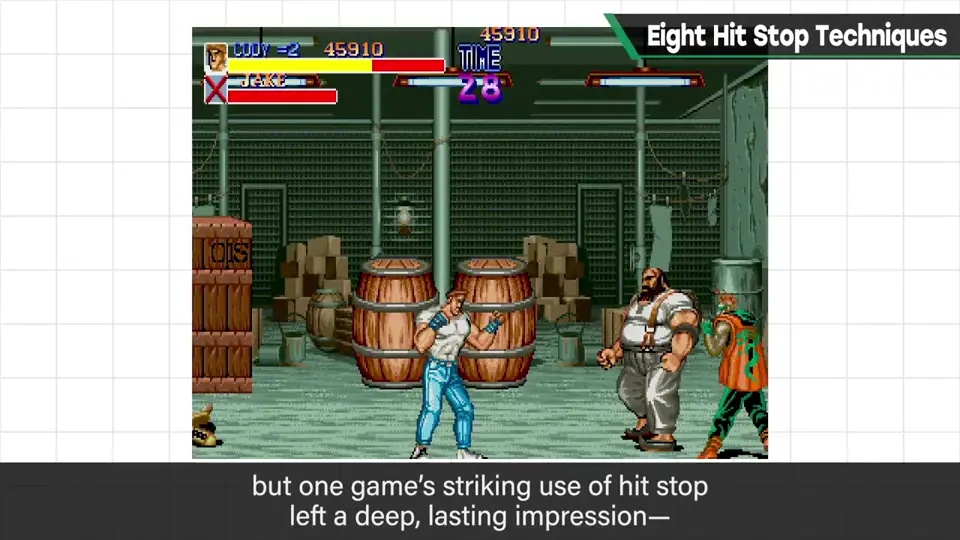
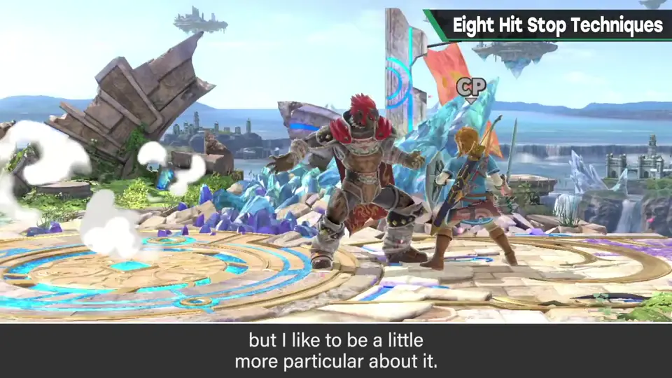
《大乱斗》里命中停顿也很重要，而且织入了好几项其他游戏没有或罕见的特殊规格。这次就讲《大乱斗 特别版》命中停顿里藏的种种特殊规格——「这可是企业机密啊」。
2. ①～④：怎么抖 0:58
① 让受击方抖得更大：命中停顿让两者都停，但受伤一方抖得大、施加伤害一方抖得小。其他游戏常见攻击方不抖，或两方都不抖。
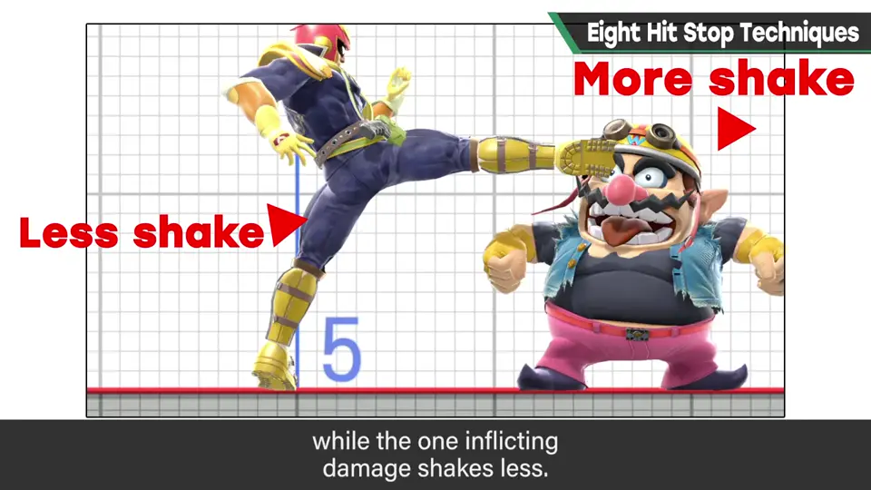
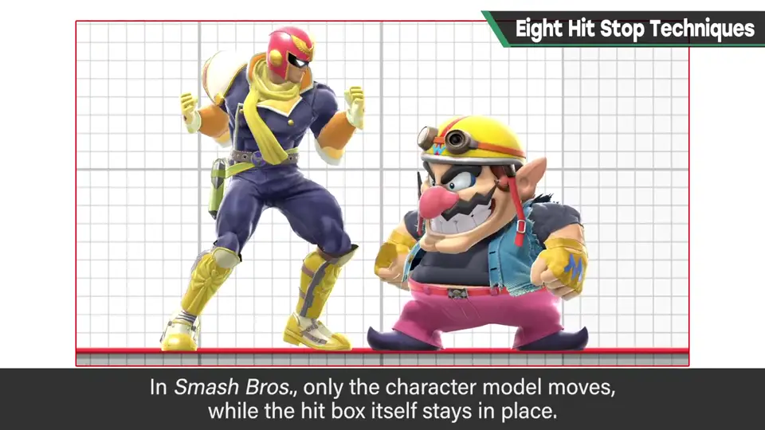
② 受击判定不抖：如果直接让斗士振动，受击判定位置会偏移，本该命中的攻击打不中。大乱斗只让外观偏移，实际位置不变。
③ 地面横向、空中全方向：地面上的斗士命中停顿时只横向抖；空中的斗士也会纵向抖。考虑到双方横向对峙，纵向也抖更好；但在地面纵向抖，脚会陷进地面——这在 2D 游戏里原本不用担心。
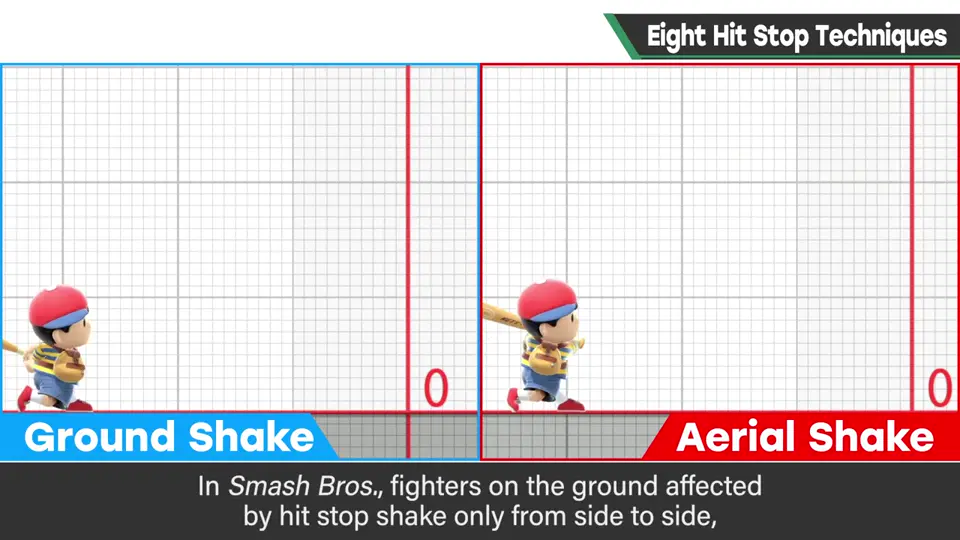
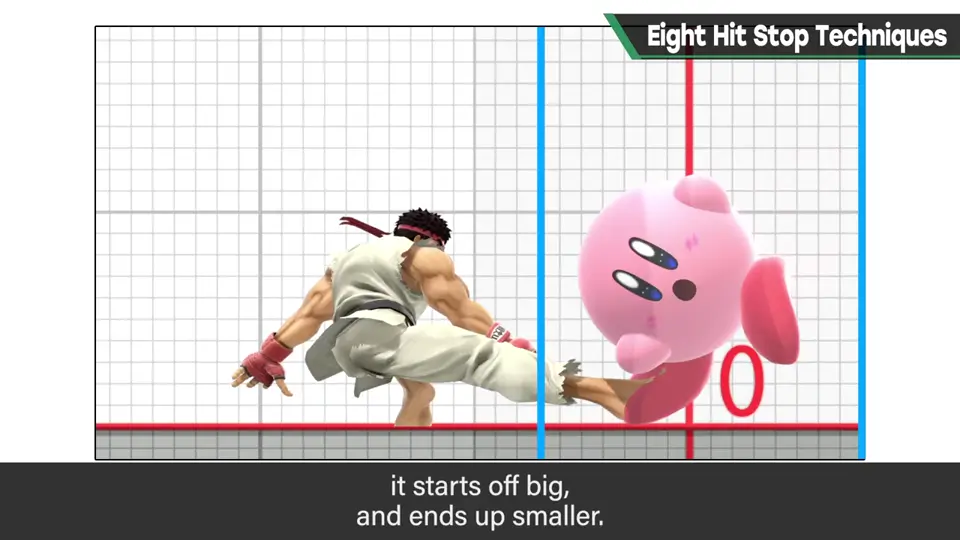
④ 振幅逐渐收敛：不是固定振幅，而是一开始大、最后小。预先算好命中停顿时间，再分割，进行适当的收敛。
3. ⑤ 控制停顿量 2:27
⑤ 控制命中停顿的大小：大乱斗攻击力越高命中停顿越大，而且还能乘上系数。
例如马尔斯的 Smash 攻击：攻击力低的剑根没什么手感；攻击力高的剑尖手感极佳、「咚」地打进心里。这不只是攻击力的差，还乘了系数，让命中手感比攻击力差更强。
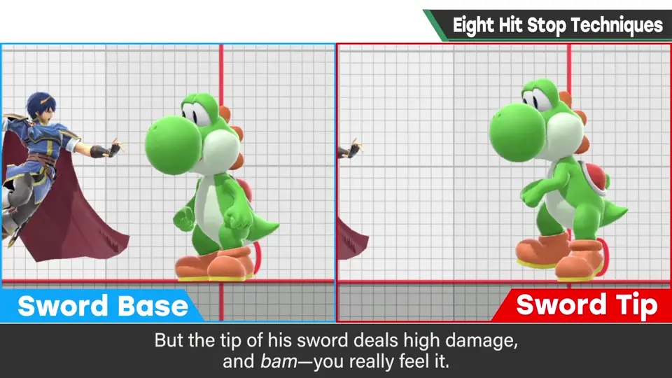
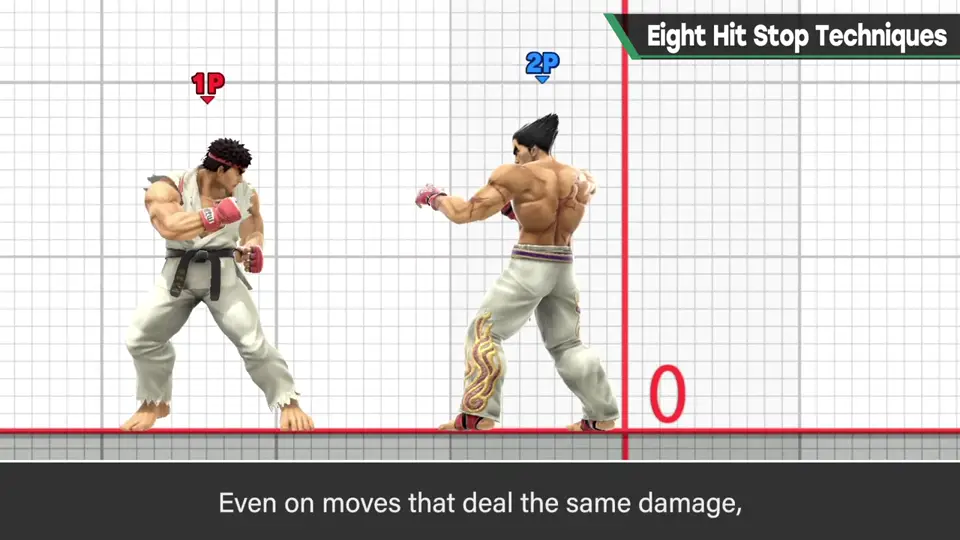
另外，同样的攻击力，隆的命中停顿大、一八的命中停顿小——这是为了贴合原作感而控制的。
4. ⑥⑦ 插值与微动 3:16
⑥ 插值到受击姿势：命中停顿中受击方的画面一般不动，「啪」地停住。但大乱斗从受伤瞬间起，花数帧插值到受击姿势：既不一直停着，也不瞬间切换，而是用约 4 帧平滑地做动作混合，兼顾手感与流畅。
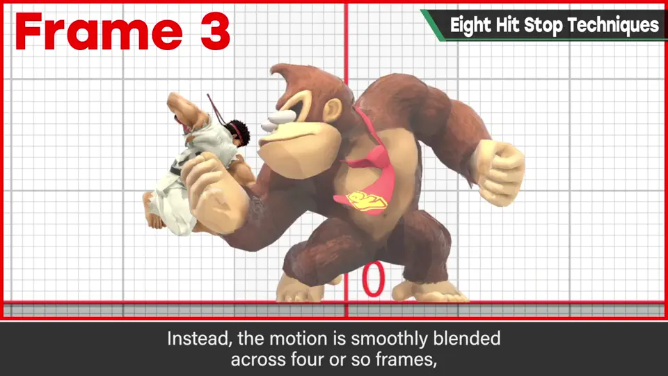
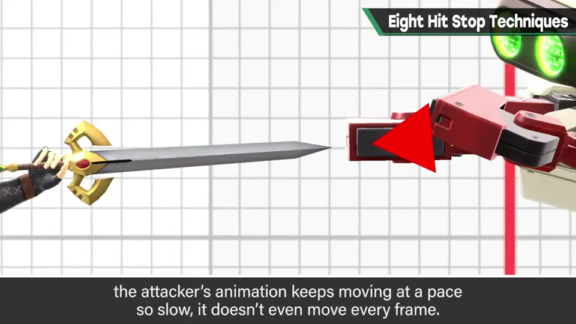
⑦ 命中停顿中攻击方极轻微地移动：这是特殊规格中的极致。例如持剑斗士强力砍下时，仔细看命中停顿中的剑尖，会「滋滋滋」地移动。
停顿中，以不足 1 帧的微量速度推进攻击方的动作；停顿解除后若无其事地继续。可设开关，并不是所有攻击都有——是为了让剑砍进去的手感更逼真，有时没有反而更合适。
还有雷击时延长命中停顿、考虑多人战而减少命中停顿等，这里略过。
5. ⑧ 随镜头距离调整振幅 4:40
⑧ 振幅随镜头距离变化：镜头拉远时，相对振动会更大。这样无论近看还是远看，都能得到命中感。
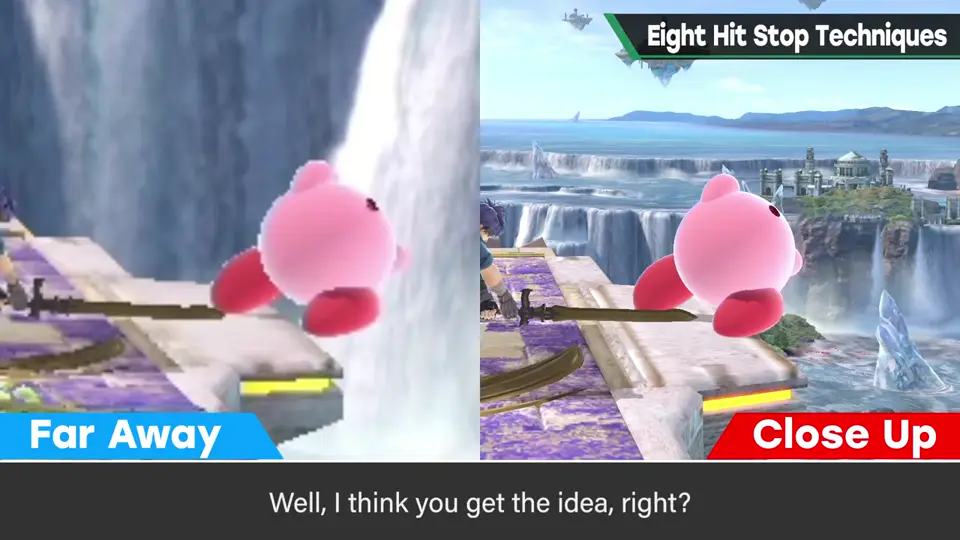
自测题
1. 大乱斗的命中停顿与「只停住」有何不同？
停顿同时还会微振动，并含多项特殊规格。 0:46
2. 为什么受击判定不跟着抖？
斗士直接振动会让判定位置偏移，本应命中的攻击打不中；所以只抖外观。 1:27
3. 为什么地面上只横向抖？
地面纵向抖会让脚陷进地面；空中则全方向抖。 1:38
4. 马尔斯剑尖与剑根的手感差如何实现？
不只是攻击力差，还给命中停顿量乘了系数。 2:27
5. 第 7 项「攻击方微动」是什么？
停顿中以不足 1 帧的微量速度推进攻击方动画（如剑尖缓缓前进），解除后照常继续；可开关。 3:50